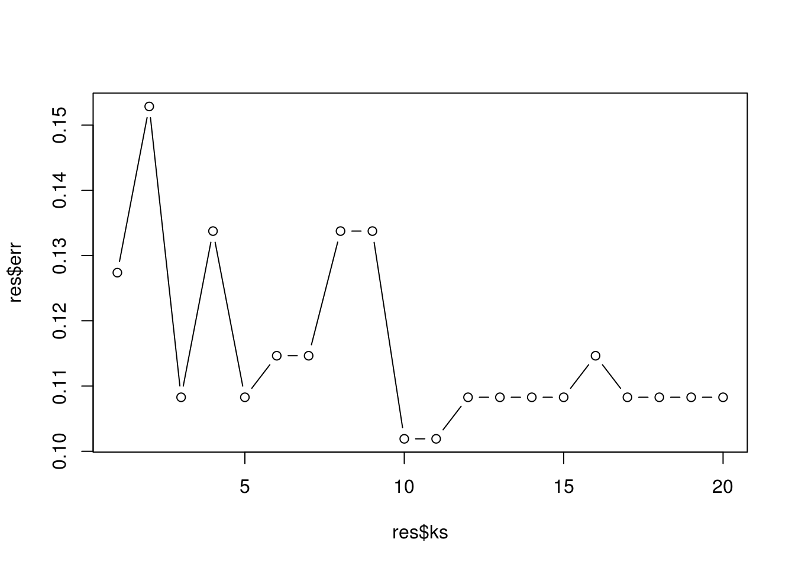
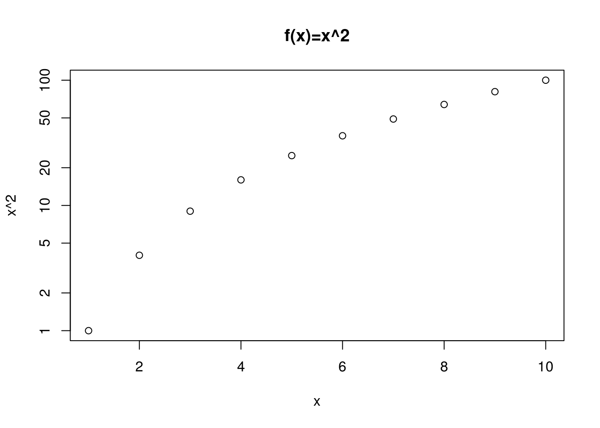
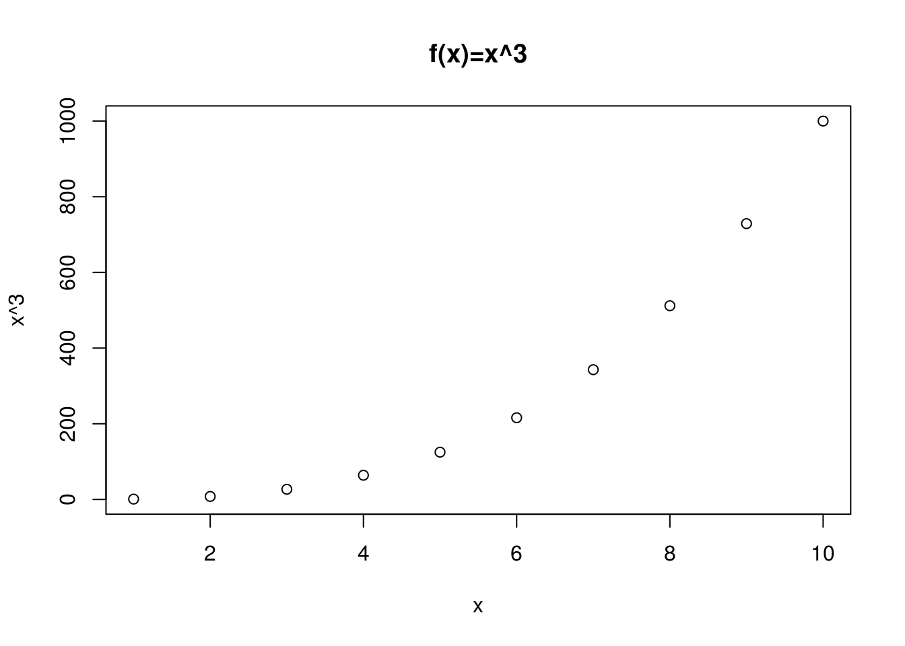
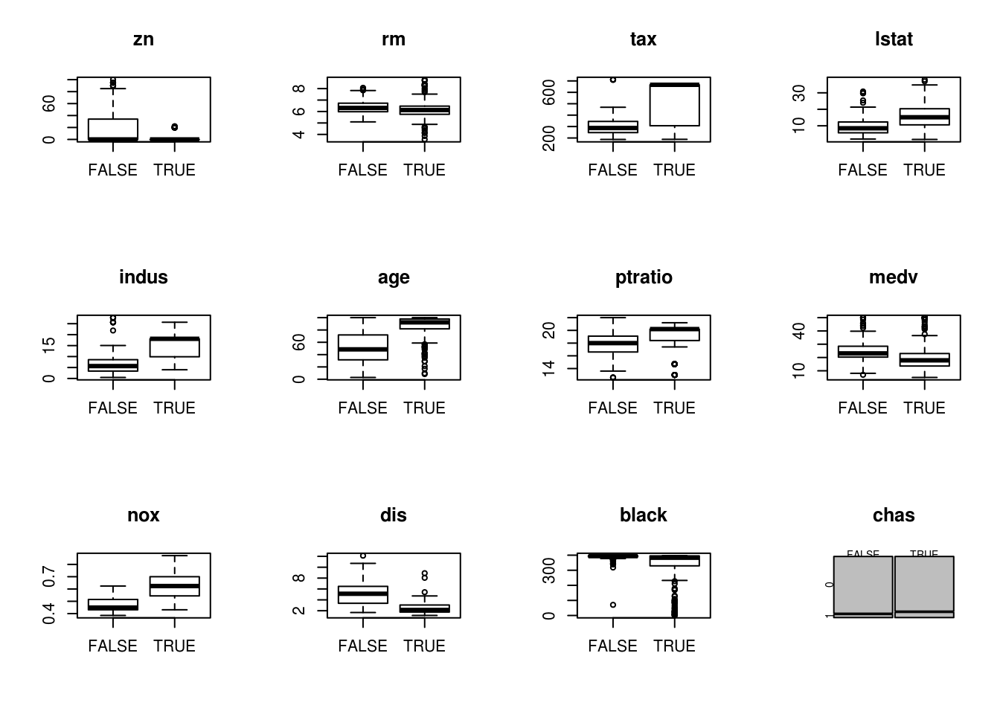

Chapter 4 Classification
- Note that \[\begin{align*} 1 - p(X) &= 1 - \frac{e^{\beta_0+\beta_1X}}{1+e^{\beta_0+\beta_1X}} \\ &= \frac{1 + e^{\beta_0+\beta_1X}}{1+e^{\beta_0+\beta_1X}} - \frac{e^{\beta_0+\beta_1X}}{1+e^{\beta_0+\beta_1X}} \\ &= \frac{1}{1 + e^{\beta_0+\beta_1X}}\, . \end{align*}\] Then \[\begin{align*} \frac{p(X)}{1-p(X)} &= \frac{\frac{e^{\beta_0+\beta_1X}}{1 + e^{\beta_0+\beta_1X}}}{\frac{1}{1+e^{\beta_0+\beta_1X}}} \\ &= e^{\beta_0+\beta_1X}\, . \end{align*}\]
- Since \(p_k(x)\) has the same denominator for all \(k\), so we can ignore it, so we are left with \[p_k^*(x) = \pi_k \frac{1}{\sqrt{2 \pi }\sigma} \exp \left(-\frac{1}{2 \sigma^2}(x - \mu_k)^2 \right)\, .\] In addition, the \(\frac{1}{\sqrt{2 \pi}\sigma}\) term is the same, so we just need to maximize \[p_k^{**}(x) = \pi_k \exp \left(-\frac{1}{2 \sigma^2}(x - \mu_k)^2 \right)\, . \] Logarithms preserve order, i.e. if \(p^{**}_i(x) < p^{**}_j(x)\), then \(\log(p^{**}_i(x)) < \log(p^{**}_j(x))\). Taking a log of \(p^{**}_k(x)\) gives
\[\begin{align*}
\log(p^{**}_k(x)) &= \log \left( \pi_k \exp \left(-\frac{1}{2 \sigma^2}(x - \mu_k)^2 \right) \right) \\
&= \log(\pi_k) -\frac{1}{2 \sigma^2}(x - \mu_k)^2 \\
&= \log(\pi_k) -\frac{1}{2 \sigma^2}(x^2 - 2x \mu_k + \mu_k^2) \\
&= \log(\pi_k) - \frac{x^2}{2 \sigma^2} + \frac{x \mu_k}{\sigma^2} - \frac{\mu_k^2}{2 \sigma^2} \, .
\end{align*}\]
Since \(\sigma^2\) is constant, we have that the \(\frac{x^2}{2 \sigma^2}\) term is the same for all \(\log(\pi^{**}(x))\) terms, so we can ignore it when maximizing. Removing this term from the last equation gives \[ \delta_k(x) = \log(\pi_k) + \frac{x \mu_k}{\sigma^2} -\frac{\mu_k^2}{2 \sigma^2} \, .\] From this we can conclude that maximizing our original equation is equivalent to maximizing the last equation.
- We can follow the arguments as the last problem, but we will end up with
\[\begin{equation}
p_k^*(x) = \pi_k \frac{1}{\sqrt{2 \pi }\sigma_k} \exp \left(-\frac{1}{2 \sigma^2}(x - \mu_k)^2 \right)\, .
\tag{4.1}
\end{equation}\]
Note that we can’t drop the \(\sigma_k\) as in problem 2 since it is unique for each population. Taking the log of the (4.1) we get
\[\begin{align}
\log(p_k^*(x)) &= \log(\pi_k) - \log(\sqrt(2 \pi) \sigma_k) + \frac{1}{2 \sigma_k^2} (x - \mu_k)^2 \nonumber \\
&= \log(\pi_k) - \log(\sqrt(2 \pi) \sigma_k) + \frac{1}{2 \sigma_k^2} (x^2 - 2x\mu_k + \mu_k^2) \nonumber \\
\end{align}\]
Note that we cannot drop the \(1/(2 \sigma_k^2)\) term since it varies between each group. Therefore, the above equation is quadratic.
- The question is essentially asking us to compute \(P(|X_2-X_1|<.05)\) where \(X_2\) is our current observation and \(X_1\) is our data. However, there is some issues along the edges of the interval that make it annoying to compute. I am going to ignore these since it won’t really add much more value even though the answer is more accurate. Given some \(x\), the probability that our observation falls within \(\pm 0.05\) of \(x\) is \(P(x-0.05 \leq X \leq x+0.05) = .1\).
- Same as before, given \((x_1,x_2) \in \mathbb{R}^2\), \(P(x_1 - 0.05 \leq X_1 \leq x_1 + 0.05, x_2 - 0.05 \leq X_2 \leq x_2 + 0.05)\) \(=P(x_1 - 0.05 \leq X_1 \leq x_1)P(x_2 - 0.05 \leq X_2 \leq x_2 + 0.05)\) \(=P(x_1 - 0.05 \leq X_1 \leq x_1)^2 = 0.1^2 = 0.01\). I used independence to separate the probability into two probabilities, and then use i.i.d. assumption to conclude that the probabilities were equal.
- It’s clear what the pattern is at this point, \(P(x_1 - 0.05 \leq X_1 \leq x_1 + 0.05, \dots, x_{100} - 0.05 \leq X_{100} \leq x_{100} + 0.05) = P(x_1 - 0.05 \leq X_1 \leq x_1 + 0.05) ^ 100 = 0.1^{100}\). That number is miniscule.
- We can expect to find a very small amount of training data “near” our data set when \(p\) is large. This means that we are using observations that are completely unlike our prediction value to try and guess the characteristics of \(Y\).
- If \(l\) is the length of hypercube (\(l \leq 1\)), then \(P(x_1 - \frac{l}{2} \leq X_1 \leq x_1 + \frac{l}{2}, \dots, x_p - \frac{l}{2} \leq X_p \leq x_p + \frac{l}{2}) = l^p\). Thus, if we want 10%, we need to find \(l\) such that \(\sqrt[p]{.1} = l\). I use
Rto calculate the lengths for some values of \(p\).
p=c(1,2,3,10,25,50,100) (cbind(p,.1^(1/p)))## p ## [1,] 1 0.1000000 ## [2,] 2 0.3162278 ## [3,] 3 0.4641589 ## [4,] 10 0.7943282 ## [5,] 25 0.9120108 ## [6,] 50 0.9549926 ## [7,] 100 0.9772372- Initially, I expected the QDA to outperform the LDA on every training set (similar to least squares), but below is an example where the QDA performs worse on the training set.
require(MASS)## Loading required package: MASSset.seed(1) n <- 1000 n1 <- 500 n2 <- n-n1 x <- c(rnorm(n1,-.25,1),rnorm(n2,.25,1)) y <- factor(rep(c(0,1),times=c(n1,n2))) lda_wrong <- sum(predict(lda(y~x))$class!=y) qda_wrong <- sum(predict(qda(y~x))$class!=y) cbind(LDA=lda_wrong,QDA=qda_wrong)
It’s a little hard to say which is expected to do better, but I think the the LDA is better than QDA in general. The reason I suspect this has to do with the way the variance is calculated. If the Bayes decision boundary is linear, then know that for all \(k\), \(\sigma_k=\sigma\). So when we estimate \(\sigma\), we can use the observations from all the different populations. But when we do QDA, we have to estimate \(\sigma_k\) differently for each \(k\). This means that we have to divide up our observations to estimate each \(\sigma_k\). Thus, when using QDA, we might have a bunch of \(\sigma_k\) that are slightly off from \(\sigma\), creating a source of error. I think it is safe to concldue that LDA would do better on the test set. Otherwise, why even bother doing LDA?## LDA QDA ## [1,] 414 419- This question depends on the non-linearity of the boundary. In general, we would expect QDA to outperform LDA on both training and test sets. However, one can image a tiny pertubration to linearity might still be better suited for LDA. For example, if \(\sigma_1=\sigma+\epsilon\) and \(\sigma_2=\sigma\) where \(\epsilon\) is some number small relative to \(\sigma\).
- We would expect the test accuracy of QDA to improve versus LDA. This is because as we get more \(n\), we get much better estimates to \(\sigma_k\). If it turns out that \(\sigma_k=\sigma\) for all \(k\), then QDA will still capture this really well. Especially since variance estimates have diminishing returns relative to \(n\).
- False, for the reasons stated in a.
b_0 <- -5; b_1 <- 0.05; b_2 <- 1 p <- exp(b_0 + b_1*40 + b_2*3.5) p/(1+p)## [1] 0.6224593- Note if \(p = .5\), that means that \[ \frac{1}{2} = \frac{\exp(\beta \cdot x)}{1+\exp(\beta \cdot x)} \] or that \(\exp(\beta \cdot x) = 1\). Note that I switched to vector notation. Taking logs of both sides, we have \(\beta \cdot x = 0\). Going back to our problem-specific model, we have \(\beta_0 + \beta_1 x_1 + \beta_2 x_2 = 0\). Solving for \(x_2\) gives \[x_2 = \frac{-\beta_0 - \beta_2 x_2}{\beta_1}\]
(-b_0 - b_2*3.5)/b_1## [1] 30
sigma <- 6
mu1 <- 10
mu2 <- 0
pi1 <- .8
pi2 <- 1 - pi1
f1 <- dnorm(4,mu1,sigma)
f2 <- dnorm(4,mu2,sigma)
pi1*f1/(pi1*f1+pi2*f2)## [1] 0.7518525Since we can expect a 1-nearest neighbor to have perfect test error, we know and the data set is divided evenly, that the test error was 36%, so we would go with the logsitic regression.
- Let \(O\) be the odds. \(1/(1-p) = O\) gives \(p=O/(1+O)\).
.37/(1+.37)## [1] 0.270073.16/(1-.16)## [1] 0.1904762
data(Weekly,package="ISLR")
head(Weekly)## Year Lag1 Lag2 Lag3 Lag4 Lag5 Volume Today Direction
## 1 1990 0.816 1.572 -3.936 -0.229 -3.484 0.1549760 -0.270 Down
## 2 1990 -0.270 0.816 1.572 -3.936 -0.229 0.1485740 -2.576 Down
## 3 1990 -2.576 -0.270 0.816 1.572 -3.936 0.1598375 3.514 Up
## 4 1990 3.514 -2.576 -0.270 0.816 1.572 0.1616300 0.712 Up
## 5 1990 0.712 3.514 -2.576 -0.270 0.816 0.1537280 1.178 Up
## 6 1990 1.178 0.712 3.514 -2.576 -0.270 0.1544440 -1.372 Downa.
```r
summary(Weekly)
```
```
## Year Lag1 Lag2 Lag3
## Min. :1990 Min. :-18.1950 Min. :-18.1950 Min. :-18.1950
## 1st Qu.:1995 1st Qu.: -1.1540 1st Qu.: -1.1540 1st Qu.: -1.1580
## Median :2000 Median : 0.2410 Median : 0.2410 Median : 0.2410
## Mean :2000 Mean : 0.1506 Mean : 0.1511 Mean : 0.1472
## 3rd Qu.:2005 3rd Qu.: 1.4050 3rd Qu.: 1.4090 3rd Qu.: 1.4090
## Max. :2010 Max. : 12.0260 Max. : 12.0260 Max. : 12.0260
## Lag4 Lag5 Volume
## Min. :-18.1950 Min. :-18.1950 Min. :0.08747
## 1st Qu.: -1.1580 1st Qu.: -1.1660 1st Qu.:0.33202
## Median : 0.2380 Median : 0.2340 Median :1.00268
## Mean : 0.1458 Mean : 0.1399 Mean :1.57462
## 3rd Qu.: 1.4090 3rd Qu.: 1.4050 3rd Qu.:2.05373
## Max. : 12.0260 Max. : 12.0260 Max. :9.32821
## Today Direction
## Min. :-18.1950 Down:484
## 1st Qu.: -1.1540 Up :605
## Median : 0.2410
## Mean : 0.1499
## 3rd Qu.: 1.4050
## Max. : 12.0260
```
```r
cor(Weekly[,-c(1,9)])
```
```
## Lag1 Lag2 Lag3 Lag4 Lag5
## Lag1 1.000000000 -0.07485305 0.05863568 -0.071273876 -0.008183096
## Lag2 -0.074853051 1.00000000 -0.07572091 0.058381535 -0.072499482
## Lag3 0.058635682 -0.07572091 1.00000000 -0.075395865 0.060657175
## Lag4 -0.071273876 0.05838153 -0.07539587 1.000000000 -0.075675027
## Lag5 -0.008183096 -0.07249948 0.06065717 -0.075675027 1.000000000
## Volume -0.064951313 -0.08551314 -0.06928771 -0.061074617 -0.058517414
## Today -0.075031842 0.05916672 -0.07124364 -0.007825873 0.011012698
## Volume Today
## Lag1 -0.06495131 -0.075031842
## Lag2 -0.08551314 0.059166717
## Lag3 -0.06928771 -0.071243639
## Lag4 -0.06107462 -0.007825873
## Lag5 -0.05851741 0.011012698
## Volume 1.00000000 -0.033077783
## Today -0.03307778 1.000000000
```
This graph is all pairwise comparisons of the predictors with the color denoting the direction. It's hard to see a trend here.
```r
pairs(Weekly[-(8:9)],col=Weekly$Direction)
```
<img src="ISLR-exercises_files/figure-html/unnamed-chunk-74-1.png" width="672" />
Plotting the predictors against the `Today` variable also makes it hard to see any trends.
```r
par(mfcol=c(3,2))
predictors <- c(paste0("Lag",1:5),"Volume")
for (p in predictors){
plot(Weekly[,p],Weekly[,"Today"],
ylab="Today",
xlab=p,
col=Weekly[,"Direction"])
}
```
<img src="ISLR-exercises_files/figure-html/unnamed-chunk-75-1.png" width="672" />
Boxplots prove unhelpful too.
```r
par(mfcol=c(3,2))
for(p in predictors){
boxplot(as.formula(paste0(p,"~Direction")),data=Weekly)
}
```
<img src="ISLR-exercises_files/figure-html/unnamed-chunk-76-1.png" width="672" />
I'm out of ideas for plots. This is not an easy data set to work with.
b.
```r
glm.fit <- glm(Direction ~ Lag1 + Lag2 + Lag3 + Lag4 + Lag5 + Volume,data=Weekly, family=binomial)
summary(glm.fit)
```
```
##
## Call:
## glm(formula = Direction ~ Lag1 + Lag2 + Lag3 + Lag4 + Lag5 +
## Volume, family = binomial, data = Weekly)
##
## Deviance Residuals:
## Min 1Q Median 3Q Max
## -1.6949 -1.2565 0.9913 1.0849 1.4579
##
## Coefficients:
## Estimate Std. Error z value Pr(>|z|)
## (Intercept) 0.26686 0.08593 3.106 0.0019 **
## Lag1 -0.04127 0.02641 -1.563 0.1181
## Lag2 0.05844 0.02686 2.175 0.0296 *
## Lag3 -0.01606 0.02666 -0.602 0.5469
## Lag4 -0.02779 0.02646 -1.050 0.2937
## Lag5 -0.01447 0.02638 -0.549 0.5833
## Volume -0.02274 0.03690 -0.616 0.5377
## ---
## Signif. codes: 0 '***' 0.001 '**' 0.01 '*' 0.05 '.' 0.1 ' ' 1
##
## (Dispersion parameter for binomial family taken to be 1)
##
## Null deviance: 1496.2 on 1088 degrees of freedom
## Residual deviance: 1486.4 on 1082 degrees of freedom
## AIC: 1500.4
##
## Number of Fisher Scoring iterations: 4
```
The Lag2 is statistically significant at a p-value of .03, but this is a pretty low bar considering we have 6 predictors.
c.
```r
glm.probs <- predict(glm.fit,type="response")
glm.pred <- rep("Down",nrow(Weekly))
glm.pred[glm.probs > .5] <- "Up"
table(glm.pred,Weekly$Direction) #confusion table
```
```
##
## glm.pred Down Up
## Down 54 48
## Up 430 557
```
```r
sum(glm.pred==Weekly$Direction)/nrow(Weekly) #overall fraction of correct answers
```
```
## [1] 0.5610652
```
From the confusion table, we can see that our model is simply predicting `Up` a lot of times. Our overall accuracy of 56% isn't bad. Since the data is roughly divided between down and up, the overall accuracy is a good measure of how good our model is. Our model seems to say that just saying the market is going up is a pretty good bet most of the time.
d.
```r
train.inds <- Weekly$Year <= 2008
train.data <- Weekly[train.inds,]
test.data <- Weekly[!train.inds,]
test.n <- nrow(test.data)
lag2.mod <- glm(Direction ~ Lag2, data=Weekly, family=binomial, subset=train.inds)
summary(lag2.mod)
```
```
##
## Call:
## glm(formula = Direction ~ Lag2, family = binomial, data = Weekly,
## subset = train.inds)
##
## Deviance Residuals:
## Min 1Q Median 3Q Max
## -1.536 -1.264 1.021 1.091 1.368
##
## Coefficients:
## Estimate Std. Error z value Pr(>|z|)
## (Intercept) 0.20326 0.06428 3.162 0.00157 **
## Lag2 0.05810 0.02870 2.024 0.04298 *
## ---
## Signif. codes: 0 '***' 0.001 '**' 0.01 '*' 0.05 '.' 0.1 ' ' 1
##
## (Dispersion parameter for binomial family taken to be 1)
##
## Null deviance: 1354.7 on 984 degrees of freedom
## Residual deviance: 1350.5 on 983 degrees of freedom
## AIC: 1354.5
##
## Number of Fisher Scoring iterations: 4
```
```r
lag2.pred <- rep("Down",test.n)
lag2.probs <- predict(glm.fit,test.data,type="response")
lag2.pred[lag2.probs>.5] <- "Up"
table(lag2.pred,test.data$Direction)
```
```
##
## lag2.pred Down Up
## Down 17 13
## Up 26 48
```
```r
sum(lag2.pred==test.data$Direction)/test.n
```
```
## [1] 0.625
```
e.
```r
library(MASS) #For lda function
lag2.lda<-lda(Direction ~ Lag2, data=train.data)
lag2.lda.pred <- predict(lag2.lda, test.data)$class
table(lag2.lda.pred,test.data$Direction)
```
```
##
## lag2.lda.pred Down Up
## Down 9 5
## Up 34 56
```
```r
sum(lag2.lda.pred==test.data$Direction)/test.n
```
```
## [1] 0.625
```
f.
```r
library(MASS) #For lda function
lag2.qda<-qda(Direction ~ Lag2, data=train.data)
lag2.qda.pred <- predict(lag2.qda, test.data)$class
table(lag2.qda.pred,test.data$Direction)
```
```
##
## lag2.qda.pred Down Up
## Down 0 0
## Up 43 61
```
```r
sum(lag2.qda.pred==test.data$Direction)/test.n
```
```
## [1] 0.5865385
```
g.
```r
library(class)
set.seed(1)
train.X <- as.matrix(train.data[,"Lag2"])
train.Y <- as.matrix(train.data[,"Direction"])
test.X <- as.matrix(test.data[,"Lag2"])
test.Y <- as.matrix(test.data[,"Direction"])
lag2.knn.pred <- knn(train.X,test.X,train.Y,k=1)
table(lag2.knn.pred,test.Y)
```
```
## test.Y
## lag2.knn.pred Down Up
## Down 21 30
## Up 22 31
```
```r
sum(lag2.knn.pred == test.Y)/test.n
```
```
## [1] 0.5
```
h. It appears that both the LDA and the logistic regression performed similarly on the test set. Let's see which one has lower training error.
```r
glm.probs <- predict(lag2.mod) #logistic regression
glm.preds <- rep("Down",length(glm.probs))
glm.preds[glm.probs>.5] <- "Up"
glm.train.acc <- sum(glm.preds == train.data$Direction)/nrow(train.data)
lda.preds <- predict(lag2.lda,type="response")$class
lda.train.acc <- sum(lda.preds == train.data$Direction)/nrow(train.data)
cbind(lda.train.acc,glm.train.acc)
```
```
## lda.train.acc glm.train.acc
## [1,] 0.5543147 0.4568528
```
Since the LDA has higher training accuraccy, I will say that the LDA provides the best results.
i. I will simply experiment with different values of $K$.
```r
k.vals <- 1:50
err <- double(50)
for (k in k.vals){
train.X <- as.matrix(train.data[,"Lag2"])
train.Y <- as.matrix(train.data[,"Direction"])
test.X <- as.matrix(test.data[,"Lag2"])
test.Y <- as.matrix(test.data[,"Direction"])
lag2.knn.pred <- knn(train.X,test.X,train.Y,k=k)
table(lag2.knn.pred,test.Y)
err[k]<-sum(lag2.knn.pred == test.Y)/test.n
}
plot(k.vals,err,type="b")
```
<img src="ISLR-exercises_files/figure-html/unnamed-chunk-85-1.png" width="672" />
The results are everywhere, but surprisingly, it seems like $k=1$ gives the best result on the test data.data(Auto,package="ISLR")
head(Auto)## mpg cylinders displacement horsepower weight acceleration year origin
## 1 18 8 307 130 3504 12.0 70 1
## 2 15 8 350 165 3693 11.5 70 1
## 3 18 8 318 150 3436 11.0 70 1
## 4 16 8 304 150 3433 12.0 70 1
## 5 17 8 302 140 3449 10.5 70 1
## 6 15 8 429 198 4341 10.0 70 1
## name
## 1 chevrolet chevelle malibu
## 2 buick skylark 320
## 3 plymouth satellite
## 4 amc rebel sst
## 5 ford torino
## 6 ford galaxie 500a.
```r
Auto01 <- data.frame(Auto,mpg01=(as.integer(Auto$mpg >= median(Auto$mpg))))
```
b. After fiddling around, I felt like boxplots were the best plot for almost all the views. The only view I don't use a boxplot for is `mpg01 ~ origin`. It seems like a lot of the variables are pretty good predictors.
```r
par(mfcol=c(2,3))
for (p in 2:7){
var<-names(Auto01)[p]
f <- as.formula(paste0(var,"~mpg01"))
boxplot(f ,xlab=names(Auto01)[p], data = Auto01)
}
```
<img src="ISLR-exercises_files/figure-html/unnamed-chunk-88-1.png" width="672" />
```r
plot(factor(Auto01$mpg01),factor(Auto01$origin),xlab="mpg01",ylab="origin")
```
<img src="ISLR-exercises_files/figure-html/unnamed-chunk-88-2.png" width="672" />
c. I will split the data into a 60% training set and a 40% test set.
```r
set.seed(927)
n <- nrow(Auto01)
sample.inds<-sample.int(n, round(n*.6))
train<-Auto01[sample.inds,]
test<-Auto01[-sample.inds,]
```
d. I exclude acceleration because the association appears weak. In addition, I leave out origin since I am not sure how it handles factor variables. The test error comes out to 11.5%.
```r
require(MASS)
form <- mpg01 ~ cylinders + horsepower + displacement + weight + year
lda.mod <- lda(form, data=train)
lda.pred <- predict(lda.mod,test)$class
sum(lda.pred != test$mpg01)/nrow(test) # test error
```
```
## [1] 0.1146497
```
e. The test error for the QDA s 12.7%.
```r
qda.mod <- qda(form, data=train)
qda.pred <- predict(qda.mod,test)$class
sum(qda.pred != test$mpg01)/nrow(test)
```
```
## [1] 0.1273885
```
f. Logistic regression gives 9.5% test error.
```r
log.mod <- glm(form, data=train, family=binomial)
log.pred <- predict(log.mod, test, type="response")
log.pred <- ifelse(log.pred > .5, 1, 0)
sum(log.pred != test$mpg01)/nrow(test)
```
```
## [1] 0.0955414
```
g. It appears that $k=10$ is probably the best choice. require(class)
set.seed(927)
res<-data.frame(ks=1:20,errs=1:20)
preds<-c(2:4,6)
for(i in seq(along=res$ks)){
k <- res$ks[i]
knn.pred <- knn(train[,preds],test[,preds],train[,"mpg01"],k=k)
res$errs[i] <- sum(knn.pred!=test$mpg01)/nrow(test)
}
plot(res$ks,res$err,type="b")
head(res[order(res$errs),])## ks errs
## 10 10 0.1019108
## 11 11 0.1019108
## 3 3 0.1082803
## 5 5 0.1082803
## 12 12 0.1082803
## 13 13 0.1082803Power <- function() print(2^3) Power()## [1] 8Power2 <- function(x,a) print(x^a) Power2(3,8)## [1] 6561Power2(10,3)## [1] 1000Power2(8,17)## [1] 2.2518e+15Power2(131,3)## [1] 2248091Power3 <- function(x,a) x^aplot(1:10,Power3(1:10,2),main="f(x)=x^2",xlab="x",ylab="x^2",log="y")PlotPower <- function(x, a) plot(x,Power3(x,a),main=paste0("f(x)=x^",a),ylab=paste0("x^",a)) PlotPower(1:10,3)
data(Boston,package="MASS")
head(Boston)## crim zn indus chas nox rm age dis rad tax ptratio black
## 1 0.00632 18 2.31 0 0.538 6.575 65.2 4.0900 1 296 15.3 396.90
## 2 0.02731 0 7.07 0 0.469 6.421 78.9 4.9671 2 242 17.8 396.90
## 3 0.02729 0 7.07 0 0.469 7.185 61.1 4.9671 2 242 17.8 392.83
## 4 0.03237 0 2.18 0 0.458 6.998 45.8 6.0622 3 222 18.7 394.63
## 5 0.06905 0 2.18 0 0.458 7.147 54.2 6.0622 3 222 18.7 396.90
## 6 0.02985 0 2.18 0 0.458 6.430 58.7 6.0622 3 222 18.7 394.12
## lstat medv
## 1 4.98 24.0
## 2 9.14 21.6
## 3 4.03 34.7
## 4 2.94 33.4
## 5 5.33 36.2
## 6 5.21 28.7create our indicator variable to see if crime is above or below the median
Boston$crim01 <- Boston$crim > median(Boston$crim)
summary(Boston$crim01)## Mode FALSE TRUE
## logical 253 253Looking for relationships:
bp_vars <- c("zn", "indus", "nox", "rm","age","dis","tax","ptratio","black","lstat","medv") # variables I want to make boxplots of
par(mfcol=c(3,4))
for (v in bp_vars) {
boxplot(as.formula(paste0(v,"~ crim01")),data=Boston,main=v)
}
plot(table(Boston$crim01,Boston$chas),main="chas") I will compare hand picked variables versus using all of them on train and test sets for all the different methods. I will use accuracy as our error metric since our data is very evenly split between above and below median.
require(caret)## Loading required package: caret## Loading required package: lattice## Loading required package: ggplot2set.seed(1)
train.inds <- createDataPartition(Boston$crim01,p=.6,list=FALSE,times=1)
train <- Boston[train.inds,]
test <- Boston[-train.inds,]
vars.hand <- c("zn", "tax", "lstat", "Indus", "age", "ptratio", "nox", "dis")
hand.form <- as.formula(paste0("crim01 ~",vars.hand))
hand.mod <- glm(hand.form, data=train, family=binomial)
all.mod <- glm(crim01 ~ . - crim, data=train, family=binomial) #generates warning## Warning: glm.fit: fitted probabilities numerically 0 or 1 occurredhand.pred <- predict(hand.mod, test, type="response") > .5
all.pred <- predict(all.mod, test, type="response") > .5
table(hand.pred, test$crim01)##
## hand.pred FALSE TRUE
## FALSE 51 6
## TRUE 50 95table(all.pred, test$crim01)##
## all.pred FALSE TRUE
## FALSE 92 12
## TRUE 9 89mean(hand.pred == test$crim01)## [1] 0.7227723mean(all.pred==test$crim01)## [1] 0.8960396It seems like using all the variables is better. I’m curious if reducing via the step function will increase the accuracy.
step.mod <- step(all.mod)## Start: AIC=144.74
## crim01 ~ (crim + zn + indus + chas + nox + rm + age + dis + rad +
## tax + ptratio + black + lstat + medv) - crim
##
## Df Deviance AIC
## - rm 1 117.39 143.39
## - medv 1 118.01 144.01
## - chas 1 118.18 144.18
## - zn 1 118.70 144.71
## <none> 116.73 144.74
## - age 1 119.06 145.06
## - indus 1 119.27 145.27
## - ptratio 1 119.98 145.98
## - dis 1 120.05 146.05
## - lstat 1 120.36 146.37
## - tax 1 121.01 147.01
## - black 1 128.26 154.26
## - rad 1 137.42 163.42
## - nox 1 148.98 174.98
##
## Step: AIC=143.39
## crim01 ~ zn + indus + chas + nox + age + dis + rad + tax + ptratio +
## black + lstat + medv
##
## Df Deviance AIC
## - chas 1 118.70 142.71
## - zn 1 119.26 143.26
## <none> 117.39 143.39
## - indus 1 119.82 143.82
## - lstat 1 120.37 144.37
## - dis 1 121.41 145.41
## - tax 1 121.57 145.57
## - age 1 122.75 146.75
## - ptratio 1 122.82 146.82
## - medv 1 127.40 151.40
## - black 1 129.03 153.03
## - rad 1 138.64 162.64
## - nox 1 150.55 174.55
##
## Step: AIC=142.7
## crim01 ~ zn + indus + nox + age + dis + rad + tax + ptratio +
## black + lstat + medv
##
## Df Deviance AIC
## - indus 1 120.52 142.52
## <none> 118.70 142.71
## - zn 1 121.19 143.19
## - lstat 1 122.40 144.40
## - dis 1 122.57 144.57
## - ptratio 1 123.15 145.15
## - tax 1 123.91 145.91
## - age 1 125.09 147.09
## - black 1 129.60 151.60
## - medv 1 129.69 151.69
## - rad 1 143.59 165.59
## - nox 1 150.60 172.60
##
## Step: AIC=142.52
## crim01 ~ zn + nox + age + dis + rad + tax + ptratio + black +
## lstat + medv
##
## Df Deviance AIC
## <none> 120.52 142.52
## - lstat 1 123.12 143.12
## - zn 1 123.34 143.34
## - dis 1 124.32 144.32
## - ptratio 1 124.48 144.48
## - age 1 126.57 146.57
## - tax 1 128.85 148.85
## - medv 1 130.60 150.60
## - black 1 130.62 150.62
## - rad 1 150.74 170.74
## - nox 1 150.92 170.92step.pred <- predict(step.mod, test, type="response") > .5
mean(step.pred == test$crim01)## [1] 0.8861386I guess using all the predictors is the best choice here. Let’s compare with all the other models.
require(MASS)
lda.mod <- lda(crim01 ~ . - crim, data=train)
qda.mod <- qda(crim01 ~ . - crim, data=train)
lda.pred <- predict(lda.mod, test)$class
qda.pred <- predict(qda.mod, test)$class
mean(lda.pred == test$crim01)## [1] 0.8366337mean(qda.pred == test$crim01)## [1] 0.8663366require(class)
train[,-15]<-scale(train[,-15])
accs <- double()
for(k in 1:30){
knn.pred <- knn(train[,-c(1,15)],test[,-c(1,15)],train$crim01,k=k)
accs[k]<-mean(knn.pred == test$crim01)
}
best.k <- which(accs==max(accs),arr.ind=TRUE)[1]
accs[best.k]## [1] 0.5940594It looks like logistic regression wins on just using all the predictors.